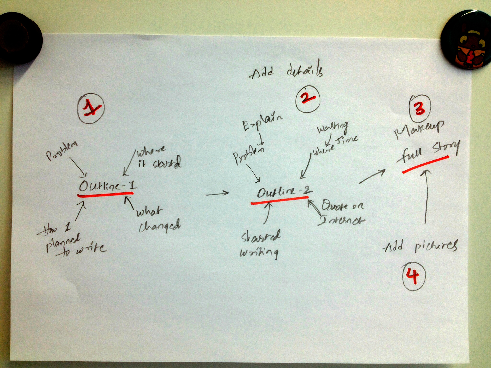

Every time I begin to work on writing for my blog, something stops me. I always try to fight back and lose. Obviously. I have been THINKING to write on a topic for more than a month. Notice THINKING. Just to stress that I am only thinking. Doing nothing about it.
While submitting a new post, I always tell myself “I should write one post per week. Okay, at least one per 2 weeks, keeping in mind other scientific projects”. Good excuse right! I know.
One day, while having a small-talk with a friend of mine, I mentioned “I was planning to write something on this topic”, that I have been thinking. Well, he said
“there is nothing wrong in making plans. You can make as many plans as you want.” Then my face turned like this.
As you see, this comment hides some meaning. We do not see any problems while making plans. Even if we expect to see some, many other problems show up when we actually working on.
Similarly, each time I sit to write, I face many problems and all these forces me to postpone the work. Two most dangerous problems, of many, are Procrastination and Distraction (PD). I am a PRO of PROcrastination. Oh boy! I’m telling you. I love those tomorrows. Everyday, my today’s work would be postponed to tomorrow. And these tomorrows are a never ending chain. If I start talking about my distractions, this post will take you somewhere off-track and you’ll be distracted. It is difficult for me to resist the temptation of thinking about the vast number of topics in the world which are completely useless to me. I start with topic-A and my brain quickly jumps onto some random topic-K which is no way related to the initial one.
Then this happened
As a daily routine, I postponed my writing and started wasting time on random topics on the internet. I stumbled upon a quote.
This hit me in the face. I felt terrible. I felt embarrassed. I know what I want to do. I know how to do. But, why it is not happening? I always imagine myself writing, but never initiated an action. How do I improve myself editing my writing without having anything on the paper ? This really changed my rest of the day. I grabbed a notebook and pencil and drawn an outline on what and how to write.

Added some details to the initial outline. Some more to the second one and so on. Drawn few cartoon pictures. All this while, I fought my temptations to procrastinate, to open a new-tab and waste time on some random internet page and finally made “When I hit by a quote on the internet and started writing…”
If you are also having the same problems like stupid me, do not wait until something punch you in the face. Nothing is really important, if it is, you obviously find time for it. Stop scrolling f’ng facebook and install BlockSite and Pomodoro. These two chrome extensions are helping me a lot to increase my productivity step by step. It takes a huge effort to free yourself from PD but it is definitely possible.